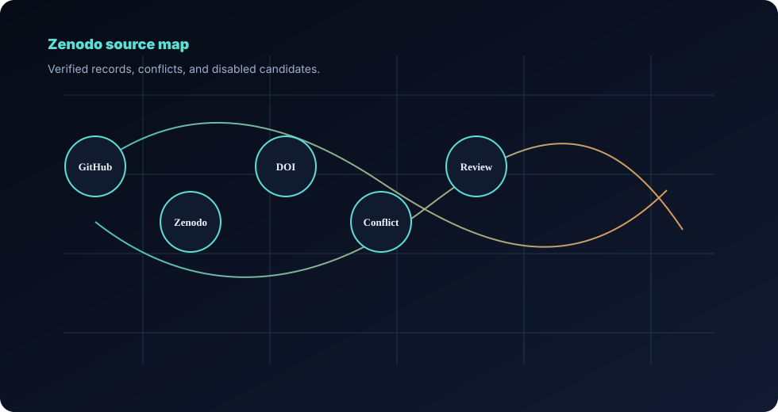

Public records
Source links and review states in one ledger.
This page separates public code, archived records, DOI links, candidate mappings, and private-review drafts. A link confirms the artifact exists; it does not validate every project claim.
| Project | Artifact title | Type | GitHub | Zenodo | DOI | Status | Notes |
|---|
LSC candidate records remain TO VERIFY until record-to-claim mapping and reproducibility review are complete. RA Consulting material stays draft / private review until approved.
Record policy
Traceable artifacts, conservative interpretation.
Verified public links are shown directly. Missing links remain blank and draft artifacts are not presented as released publications.
